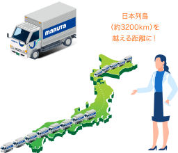
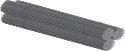

特殊鋼のサステナブル・ライフサイクル
鉄スクラップに再び生命を
特殊鋼は、皆さんの身の回りから出る
鉄スクラップを主原料としたリサイクル素材です。
ビルなどの
解体現場から
出る鉄骨廃船などから
出た鉄板類廃車などから
取り出された
車軸等の鉄家電などから
取り出された鉄
原料の91％が
リサイクル品
大同特殊鋼の製品は、
原料におけるリサイクル品の割合が91％に達しています。
0%
鉄スクラップを超高温で溶解
鉄スクラップを1600℃の超高温で溶解。
社会での役割を終えた鉄スクラップに、再び命を吹き込みます。
マグマよりも熱い！
1600℃の溶鋼は、マグマよりも熱く、
比較的さらさらしています。
現場では、熱さが痛さとして
感じられるほどです。
スクラップ再生量は、
日本列島を越える
長さです。
大同特殊鋼は、年間で188.8万tの鉄スクラップを再生しています。4tトラックで換算すると47万2千台分となり、それを一列に並べた場合、列の長さは3587.2㎞に達します。
※2018年度実績

0,000
個性豊かな特殊鋼へ
用途に応じて様々な形状・性質の特殊鋼製品を
世に送り出します。
構造用鋼
工具鋼・
金型材料型鍛造品
チタン合金・
形状記憶合金
製品再生量は、
宗谷岬から渡嘉敷島
の距離に相当します。
大同特殊鋼では、年間約153.2万tの特殊鋼製品を製造しています。4tトラックで換算すると、38万3千台に相当し、それを一列に並べた場合、列の長さは2910.8㎞に達します。 日本最北の宗谷岬から、渡嘉敷島までの距離に相当します。
※2018年度実績
0,000
副産物さえもリサイクル
製鋼の際に発生するスラグ等の副産物は、
路盤材や埋め戻し材、ろ過材等としてさらなる再利用を進めています。
レンガくず → 埋め戻し材・ろ過材
スラグ → 埋め戻し材・コンクリート骨材
排水スラッジ → 埋め戻し材
スケール → 製鋼原料
スラグ再生量は、
名古屋市から
北海道の阿寒湖の距離に
相当します。
大同特殊鋼では、年間約60万tの副産物をリサイクルしています。4tトラックで換算すると、15万台分に相当します。それを並べる1,140kmに達します。直線距離で名古屋―阿寒湖間を結ぶ長さです。
※2018年度実績
0,000
日常の様々なシーンで
最終製品の環境性に貢献。
大同特殊鋼の製品は、軽量化や高耐久化により、
最終製品の燃費向上や長寿命化など、環境性向上に貢献しています。
自動車部品
船舶部品
航空機部品
ＰＣ、
スマートフォン
部品
特殊鋼の性能が
自動車燃費に貢献
たとえば、自動車部品。自動車重量が10%軽くなると、燃費が4～8%向上するとされています。特殊鋼は、技術革新によって高い強度はそのままに、部品の薄肉化・小型化・軽量化を実現しています。